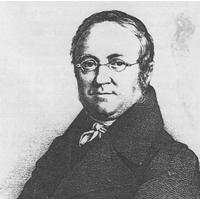

|
|
|
|
聖詩第048首 主耶和華，祢造的物 |
075万物都来颂主
1.耶和华神所造万物，都要来称谢我主，
我圣百姓也要称赞，你名荣耀无限。 2.传讲及你国度尊荣，谈论你大权能， 让世人知大能作为，你国万代荣威。 3.凡是软弱跌倒的人，主必扶持他们， 凡是被人压制欺逼，主必将他扶起。 4.万民举目齐仰望主，因你常赐食物， 你张开手，生命的灵，便得饱足丰盈。 5.耶和华神公义为怀，所作满有慈爱， 人若诚心向主求恩，主必与他亲近。 6.虔敬的人，主听所求，使他得蒙拯救， 我当赞美耶和华神，衪名永受颂称。 |
|
https://www.mred365.cn/szxg/7078.html
https://blog.xuite.net/weikuo.mr/tahymns/48362885
|
|
|
|
|


LX1806
Thy Works Shall Praise
Thy Name, O Lord
075万物都来颂主
颂新
Tune Information
| Title: | ASPURG (Frech) |
| Composer: | Johann Georg Frech |
| Meter: | 8.6.8.6 |
| Incipit: | 51536 55432 13452 |
| Key: | D Major |
| Source: | Vierstimmige Gesange (Stuttgart, Germany: 1825);Vierstimmige Gesange (Stuttgart, Germany: 1825) |
| Copyright: | Public Domain |
| Short Name: | Johann Georg Frech |
| Full Name: | Fresh, Johann Georg, 1790-1864 |
| Birth Year: | 1790 |
| Death Year: | 1864 |
Johann Georg Frech

(* January 17 1790 in Kaltental, † August 23 1864 in Esslingen am Neckar ) was a German music director, composer and organist.
Naughty was the son of a watchmaker and organ builder. He visited here until his 13th Age of the school, then high school in Stuttgart and took lessons in music.
In 1806 he was teaching assistant in Degerloch while still in Stuttgart, studied music. In 1811 he went as a teaching assistant after Esslingen and in 1812 a music teacher at the newly established Esslinger teacher seminar. In 1820 he received the office of a municipal director of music and organist at the main church in Esslingen, where he remained until his retirement in 1860. His successor was Christian Fink.
Naughty took a significant role in the Württemberg church singing together with Konrad Kocher and Friedrich Silcherstraße one. Together with the aforementioned He created "The Württemberg Choral Book" of 1828 and was co-editor of "Württemberg Choral Book" of 1844.
Frech has composed six symphonies, many choral works, including 22 chorales for Württembergischen chorale books, 67 cantatas, an opera, the oratorio "Abraham on Moriah" and some organ works.
In the district of Stuttgart Kaltental a street was named after naughty.
--de.wikipedia.org/wiki/
作曲／Johann Georg Frech（1790-1864）
作詞／駱先春牧師（1905－）